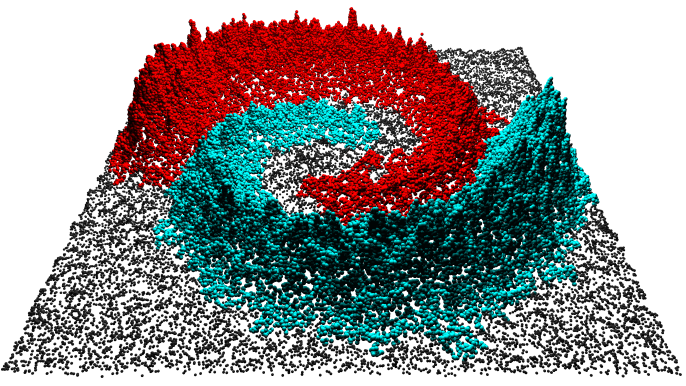
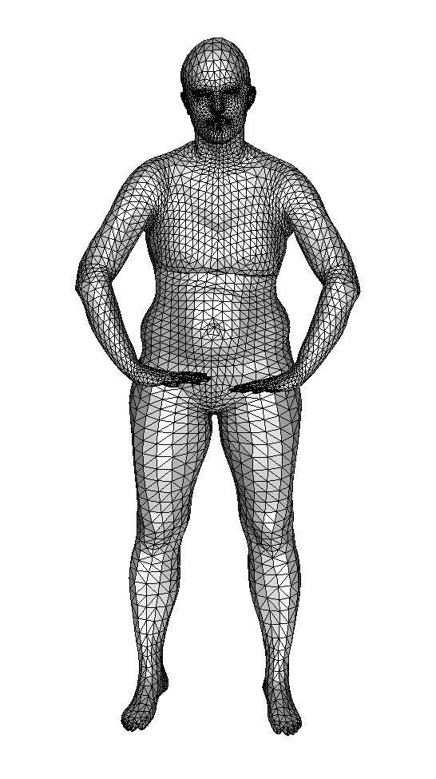
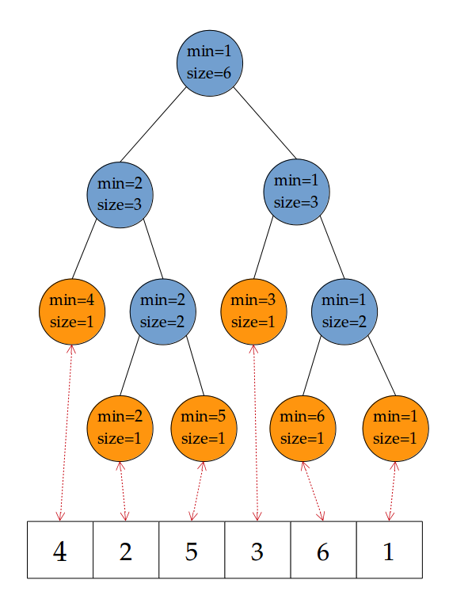
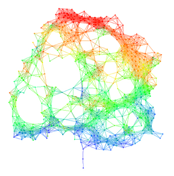
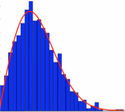

PhD Students
David Loiseaux: 2021-on, co-advised with Frédéric Cazals, funded by 3IA Côte d'Azur grant.
Teaching
|  |
2020 - 2022 Foundations of Geometric Methods in Data Analysis CentraleSupélec Instructor |
|  |
2015 - 2017 Topological Data Analysis Ecole Polytechnique Teaching Assistant |
|  |
2016 - 2017 Basics of Algorithmics and Programming Ecole Polytechnique Teaching Assistant |
Outreach
|  |
2019 - 2020 New-York Applied Topology Meeting Group Columbia University Organizer |
|  |
November 2019 Symposium on Random Matrix Theory Columbia University Organizer |